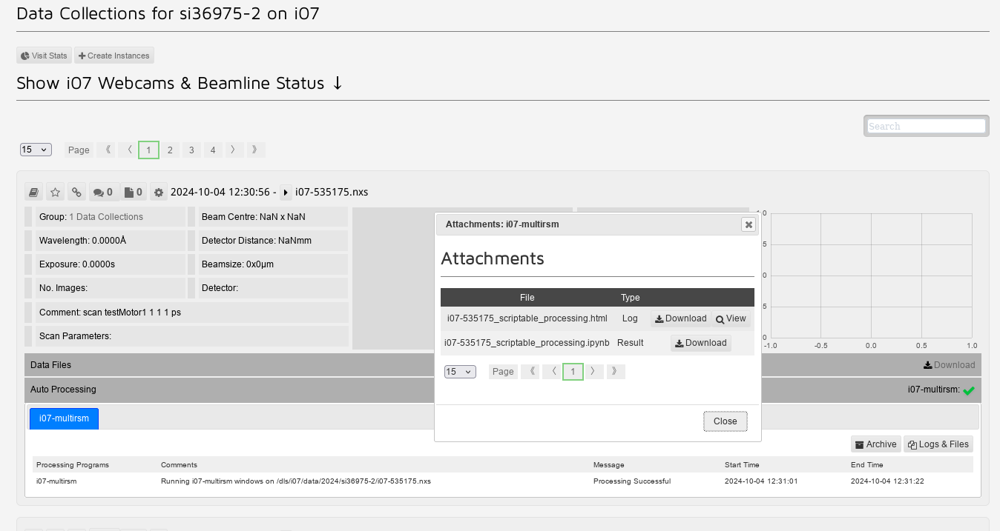
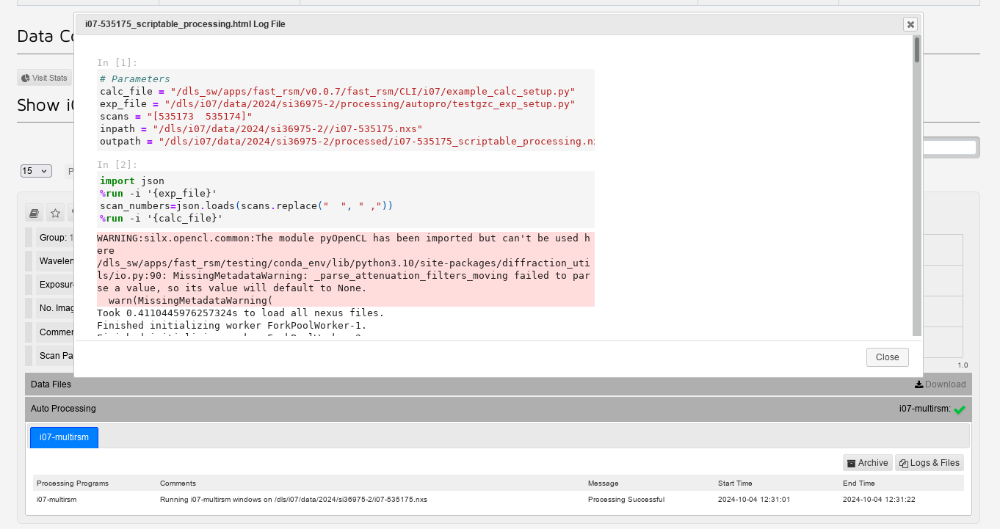

Running processing jobs directly after scan from script in gda
GDA provides the functions mapstart, currentScan, mapend, which are explained below. Note that these require the epics IOC to be running during data collection to work, there is a function checkzocalo() which will check this is running and attempt to restart it if not. It is a good idea to put this at the start of any script where this processing is reqired.
To create a map to be sent for processing automatically, the format is as follows
NOTE: the output directory within your experiment file needs to be the ‘processed’ folder in your experiment directory and not the ‘processing’ folder
#define exp_setup and calc_setup files
#enter latest version of example_calc_setup.py - do module load fast_rsm on a new terminal, and see what version fast_rsm v#### number is loaded
calc_file="/dls_sw/apps/fast_rsm/v0.0.7/fast_rsm/CLI/i07/example_calc_setup.py"
exp_file="path/to/exp_setup.py"
#start of new map
scanlist,ps=mapstart()
#collect scans that make up the map, using append(currentScan) to add scans to list
for i in range (1,4,1):
scan testMotor1 1 1 1
scanlist.append(currentscan())
#use mapend function to send off scans. Format mapend(scanlist,ps,setup_files):
mapend(scanlist,ps,[exp_file,calc_file])
You can then collect and process a second map by repeating the code from scanlist,ps=mapstart() onwards.
Additionally you can change the exp_file after the first map has finished if a different type of processing is required for the second map
An example macro script is located here /dls_sw/i07/scripts/gda-zocalo/example_gzc_script.py
to monitor progress go to https://ispyb.diamond.ac.uk/dc/visit/si###### using your experiment number
if processing has gone correctly there will be an entry on the webpage with a green tick.
clicking the auto processing line for the entry gives options for ‘Logs & Files’. Selecting this opens a window show the extra attachments you can view.
{kind=link}

from this you can select the ‘View’ option on the top line, which will open a scrollable window where you can see the code that was run for the processing, as well as any error messages that were output
{kind=link}
